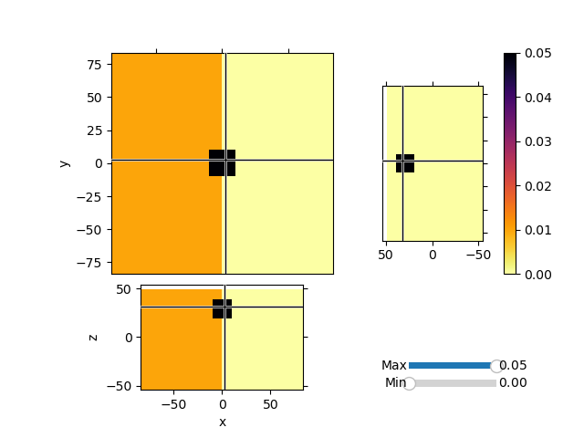
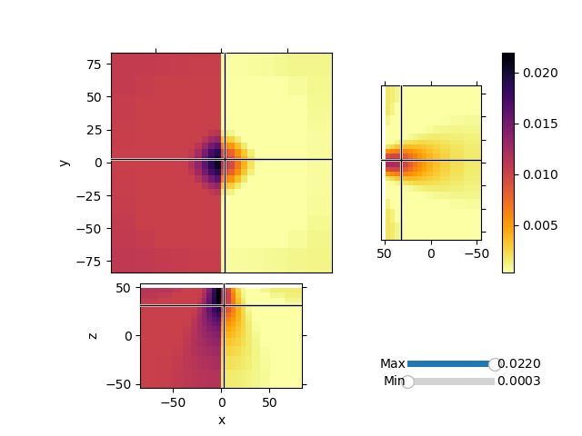

Note
Go to the end to download the full example code.
Maps: ComboMaps#
Invert synthetic magnetic data with variable background values and a single block anomaly buried at depth. We will use the Sum Map to invert for both the background values and an heterogeneous susceptibiilty model.
1
- 
- 
SimPEG.InvProblem is setting bfgsH0 to the inverse of the eval2Deriv.
***Done using the default solver Pardiso and no solver_opts.***
model has any nan: 0
=============================== Projected GNCG ===============================
# beta phi_d phi_m f |proj(x-g)-x| LS Comment
-----------------------------------------------------------------------------
x0 has any nan: 0
0 5.65e+05 9.11e+06 4.27e-04 9.11e+06 6.29e+01 0
1 2.83e+05 1.30e+05 7.70e-02 1.51e+05 3.50e+01 0
2 1.41e+05 4.55e+04 2.34e-01 7.86e+04 4.94e+01 0
3 7.07e+04 1.94e+04 3.63e-01 4.51e+04 5.53e+01 0 Skip BFGS
4 3.53e+04 6.28e+03 4.76e-01 2.31e+04 4.86e+01 0 Skip BFGS
5 1.77e+04 4.57e+03 5.10e-01 1.36e+04 3.56e+01 1 Skip BFGS
6 8.83e+03 8.94e+02 6.01e-01 6.20e+03 4.80e+01 0
7 4.42e+03 8.85e+02 6.01e-01 3.54e+03 5.30e+01 4 Skip BFGS
8 2.21e+03 4.07e+02 6.46e-01 1.83e+03 4.53e+01 0
9 1.10e+03 4.07e+02 6.46e-01 1.12e+03 3.62e+01 6 Skip BFGS
Reached starting chifact with l2-norm regularization: Start IRLS steps...
irls_threshold 0.01022819118952365
irls_threshold 0.01207616233251063
10 5.52e+02 3.51e+02 9.01e-01 8.48e+02 3.33e+01 0
11 8.67e+02 3.51e+02 9.61e-01 1.18e+03 5.87e+01 4
12 1.36e+03 3.52e+02 1.01e+00 1.72e+03 6.05e+01 5 Skip BFGS
13 2.12e+03 3.58e+02 1.03e+00 2.54e+03 3.62e+01 4
Minimum decrease in regularization.End of IRLS
------------------------- STOP! -------------------------
1 : |fc-fOld| = 0.0000e+00 <= tolF*(1+|f0|) = 9.1127e+05
1 : |xc-x_last| = 7.7197e-03 <= tolX*(1+|x0|) = 1.0075e-01
0 : |proj(x-g)-x| = 3.6229e+01 <= tolG = 1.0000e-03
0 : |proj(x-g)-x| = 3.6229e+01 <= 1e3*eps = 1.0000e-03
0 : maxIter = 100 <= iter = 14
------------------------- DONE! -------------------------
from discretize import TensorMesh
from discretize.utils import active_from_xyz
from SimPEG import (
utils,
maps,
regularization,
data_misfit,
optimization,
inverse_problem,
directives,
inversion,
)
from SimPEG.potential_fields import magnetics
import numpy as np
import matplotlib.pyplot as plt
def run(plotIt=True):
h0_amplitude, h0_inclination, h0_declination = (50000.0, 90.0, 0.0)
# Create a mesh
dx = 5.0
hxind = [(dx, 5, -1.3), (dx, 10), (dx, 5, 1.3)]
hyind = [(dx, 5, -1.3), (dx, 10), (dx, 5, 1.3)]
hzind = [(dx, 5, -1.3), (dx, 10)]
mesh = TensorMesh([hxind, hyind, hzind], "CCC")
# Lets create a simple Gaussian topo and set the active cells
[xx, yy] = np.meshgrid(mesh.nodes_x, mesh.nodes_y)
zz = -np.exp((xx**2 + yy**2) / 75**2) + mesh.nodes_z[-1]
# We would usually load a topofile
topo = np.c_[utils.mkvc(xx), utils.mkvc(yy), utils.mkvc(zz)]
# Go from topo to array of indices of active cells
actv = active_from_xyz(mesh, topo, "N")
nC = int(actv.sum())
# Create and array of observation points
xr = np.linspace(-20.0, 20.0, 20)
yr = np.linspace(-20.0, 20.0, 20)
X, Y = np.meshgrid(xr, yr)
# Move the observation points 5m above the topo
Z = -np.exp((X**2 + Y**2) / 75**2) + mesh.nodes_z[-1] + 5.0
# Create a MAGsurvey
rxLoc = np.c_[utils.mkvc(X.T), utils.mkvc(Y.T), utils.mkvc(Z.T)]
rxLoc = magnetics.Point(rxLoc)
srcField = magnetics.UniformBackgroundField(
receiver_list=[rxLoc],
amplitude=h0_amplitude,
inclination=h0_inclination,
declination=h0_declination,
)
survey = magnetics.Survey(srcField)
# We can now create a susceptibility model and generate data
model = np.zeros(mesh.nC)
# Change values in half the domain
model[mesh.gridCC[:, 0] < 0] = 0.01
# Add a block in half-space
model = utils.model_builder.add_block(
mesh.gridCC, model, np.r_[-10, -10, 20], np.r_[10, 10, 40], 0.05
)
model = utils.mkvc(model)
model = model[actv]
# Create active map to go from reduce set to full
actvMap = maps.InjectActiveCells(mesh, actv, np.nan)
# Create reduced identity map
idenMap = maps.IdentityMap(nP=nC)
# Create the forward model operator
prob = magnetics.Simulation3DIntegral(
mesh,
survey=survey,
chiMap=idenMap,
ind_active=actv,
store_sensitivities="forward_only",
)
# Compute linear forward operator and compute some data
data = prob.make_synthetic_data(
model, relative_error=0.0, noise_floor=1, add_noise=True
)
# Create a homogenous maps for the two domains
domains = [mesh.gridCC[actv, 0] < 0, mesh.gridCC[actv, 0] >= 0]
homogMap = maps.SurjectUnits(domains)
# Create a wire map for a second model space, voxel based
wires = maps.Wires(("homo", len(domains)), ("hetero", nC))
# Create Sum map
sumMap = maps.SumMap([homogMap * wires.homo, wires.hetero])
# Create the forward model operator
prob = magnetics.Simulation3DIntegral(
mesh, survey=survey, chiMap=sumMap, ind_active=actv, store_sensitivities="ram"
)
# Make sensitivity weighting
# Take the cell number out of the scaling.
# Want to keep high sens for large volumes
wr = (
prob.getJtJdiag(np.ones(sumMap.shape[1]))
/ np.r_[homogMap.P.T * mesh.cell_volumes[actv], mesh.cell_volumes[actv]] ** 2.0
)
# Scale the model spaces independently
wr[wires.homo.index] /= np.max((wires.homo * wr)) * utils.mkvc(
homogMap.P.sum(axis=0).flatten()
)
wr[wires.hetero.index] /= np.max(wires.hetero * wr)
wr = wr**0.5
## Create a regularization
# For the homogeneous model
regMesh = TensorMesh([len(domains)])
reg_m1 = regularization.Sparse(regMesh, mapping=wires.homo)
reg_m1.set_weights(weights=wires.homo * wr)
reg_m1.norms = [0, 2]
reg_m1.reference_model = np.zeros(sumMap.shape[1])
# Regularization for the voxel model
reg_m2 = regularization.Sparse(
mesh, active_cells=actv, mapping=wires.hetero, gradient_type="components"
)
reg_m2.set_weights(weights=wires.hetero * wr)
reg_m2.norms = [0, 0, 0, 0]
reg_m2.reference_model = np.zeros(sumMap.shape[1])
reg = reg_m1 + reg_m2
# Data misfit function
dmis = data_misfit.L2DataMisfit(simulation=prob, data=data)
# Add directives to the inversion
opt = optimization.ProjectedGNCG(
maxIter=100,
lower=0.0,
upper=1.0,
maxIterLS=20,
maxIterCG=10,
tolCG=1e-3,
tolG=1e-3,
eps=1e-6,
)
invProb = inverse_problem.BaseInvProblem(dmis, reg, opt)
betaest = directives.BetaEstimate_ByEig(beta0_ratio=1e-2)
# Here is where the norms are applied
# Use pick a threshold parameter empirically based on the distribution of
# model parameters
IRLS = directives.Update_IRLS(f_min_change=1e-3, minGNiter=1)
update_Jacobi = directives.UpdatePreconditioner()
inv = inversion.BaseInversion(invProb, directiveList=[IRLS, betaest, update_Jacobi])
# Run the inversion
m0 = np.ones(sumMap.shape[1]) * 1e-4 # Starting model
prob.model = m0
mrecSum = inv.run(m0)
if plotIt:
mesh.plot_3d_slicer(
actvMap * model,
aspect="equal",
zslice=30,
pcolor_opts={"cmap": "inferno_r"},
transparent="slider",
)
mesh.plot_3d_slicer(
actvMap * sumMap * mrecSum,
aspect="equal",
zslice=30,
pcolor_opts={"cmap": "inferno_r"},
transparent="slider",
)
if __name__ == "__main__":
run()
plt.show()
Total running time of the script: (0 minutes 17.723 seconds)
Estimated memory usage: 42 MB